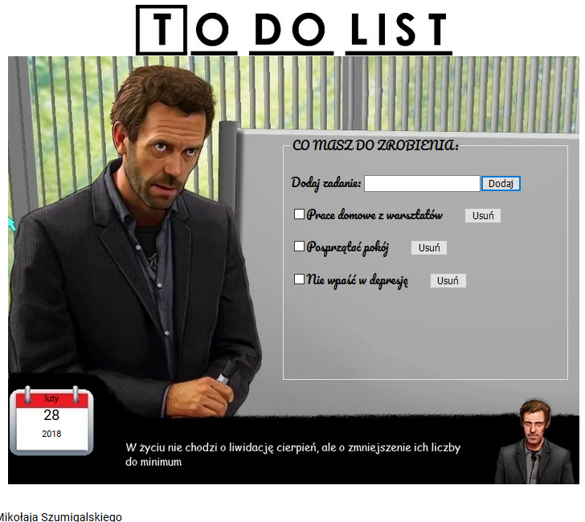

Wprowadzenie
Te zajęcia są kontynuacją zajęć grupy początkującej. Jeśli nie byłeś ich uczestnikiem warto zapoznać się z materiałami z tamtego semestru, szczególnie z zajęciami z GIT'a i Github'a, ponieważ z tymi narzedziami będziemy pracować w tym semestrze
Zajęcia odbywają się we wtorki o godzinie 11.45 w sali D-2
Kontaktować się można poprzez maila m.szumigalski@op.pl, przez hub.sealcode.org (chat) lub przez Facebooka.
Plan warsztatów
Celem warsztatów jest wprowadzenie Was do języka JavaScript, uzupełnienie Waszej wiedzy z zakresu HTML, nauka pracy z GIT'em, oraz projekt.
Projekt
Projekt to najważniejszy cel tych zajęć. Ma on sprawdzić Waszą wiedzę z zajęć , ale również pokazać jak w praktyce wykorzystać Waszą wiedzę. Pracę nad projektem podzielimy na następujące etapy:
- Stworzenie repozytorium, w którym pliki będą poukładane w folderach html, css, js, img, oraz będzie zawierało plik index.html, który będzie to wszystko "uruchamiał" (w razie potrzeby można tworzyć też inne foldery)
- budowanie szkieletu aplikacji w HTML5 - dokument powinien zawierać:
- tytuł aplikacji
- aktualną datę (na razie wpisujemy na sztywno - np. “6. lutego 2017r.”)
- pole do wpisania treści nowego zadania
- przycisk do dodawania nowego zadania
- miejsce na listę zadań (na początku na sztywno wpisujemy kilka zadań)
- pole typu checkbox do zaznaczenia czy dane zadanie zostało wykonane (domyślnie zadanie jest niewykonane)
- przycisk do usuwania zadania przy każdym z nich
- stopkę
- ostylowanie szkieletu aplikacji w CSS3
- “ożywienie” aplikacji przy pomocy języka JavaScript:
- po wpisaniu zadania i wciśnięciu klawisza ENTER lub kliknięciu przycisku do dodawania zadanie powinno zostać dodane do listy zadań
- pilnujemy aby nie było możliwości dodania pustego zadania
- możemy zmieniać status zadania z niewykonanego na wykonane i odwrotnie
- po kliknięciu przycisku do usuwania, dane zadanie powinno zniknąć z listy zadań
- data powinna być aktualizowana
- łączenie się z API:
- aplikacja powinna łączyć się z API sealcode-owym
- dodanie, usunięcie i modyfikacja stanu wykonania zadań powinny być wykonywane poprzez API sealcode-owe
- przy odświeżaniu strony oraz dokonaniu zmian(y), lista zadań widoczna na stronie powinna zostać zaktualizowana
Terminy wykonania poszczególnych części projektu będą podawane na bieżąco w czasie trwania zajęć.

Tematy zajęć
Program zajęć:
- Git i Github, małe przypomnienie, branche, merge'owanie
- znaczniki charakterystyczne dla języka HTML5
- formularze
- animacje w CSS3
- pozycjonowanie elementów na stronie
- rytm pionowy
- wprowadzenie do Flexboxa
- podstawy programowania w języku JavaScript
- obiektowy model dokumentu
- zdarzenia w JS
- REST API
- REACT.JS (jeśli starczy czasu)
Zasady zaliczenia:
Aby otrzymać certyfikat konieczne jest oddanie projektu i uzyskanie z niego odpowiedniej ilości punktów (szczegóły wkrótce). Oprócz tego można uzyskiwać punkty za zadania domowe, które mogą podwyższyć ocenę (nie są obowiązkowe, ale warto je robić, aby utrwalić wiedzę z zajęć). Czas na oddawanie prac domowych - zawsze do końca poniedziałku przed następnymi zajęciami.
Jeśli chodzi o nieobecności, są 4 bez konsekwencji. W razie gdyby było ich więcej może to rzutować na ocenie.
{kind=link}